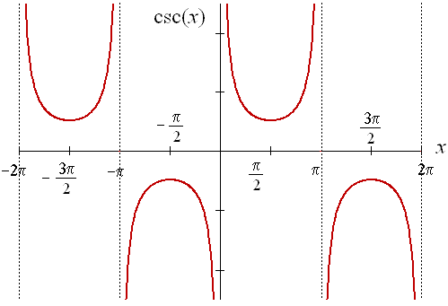
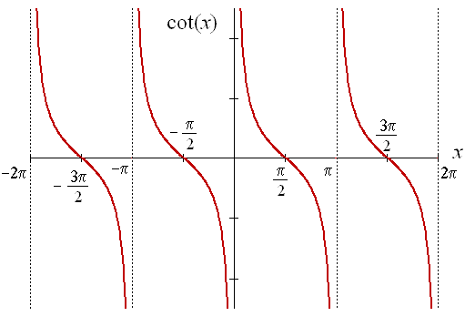
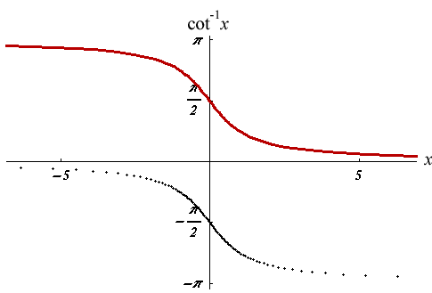

sin(x)

cos(x)
y=tan(x) is discontinuous when where n is any constant.
y=arcsin(x) is continuous on the interval[-1,1].
y=arccos(x) is continuous on the interval[-1,1].
y=arctan(x) is continuous for all real numbers x.
y=sec(x) is discontinuous when where n is any constant.
y=csc(x) is discontinuous when where n is any constant.

y=cot(x) is discontinuous when where n is any constant.

y=arcsec(x) and y=arccsc(x) are continuous in the interval (-, -1] or [1, ).
y=arctan(x) is continuous for all real numbers.
